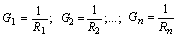

Параллельно соединённые резисторы с проводимостями G1, G2, … , Gn, можно заменить одним резистором с проводимостью GЭ (рис. 2.18).
Так как напряжение на всех ветвях одинаковое, равное U, то токи ветвей соответственно равны:
| где |
 |
- проводимости ветвей в сименсах (См). |
В схеме с двумя узлами (рис. 2.18) ток на входе цепи
а эквивалентная проводимость пассивного участка цепи между узлами 1 и 2 равна
Несколько параллельных ветвей с источниками напряжения
(ИН) и резисторами могут быть заменены одной ветвью с одним ИН и эквивалентным
сопротивлением Rэ. Вначале источники напряжения заменяют эквивалентными
источниками тока (ИТ) и находят один эквивалентный ИТ с током JЭ =
J1 +
J2 +
...+ Jn и
проводимостью GЭ =
G1 +
G2 +
...+ Gn,
а затем получают один эквивалентный ИН с ЭДС EЭ =
JЭ/GЭ и
сопротивлением Rвт.Э =
1/GЭ. Этапы
такого преобразования представлены на рис. 2.19, а - г. Если
цепь содержит n одинаковых параллельно соединённых источников
напряжения, то эквивалентный ИН будет иметь параметры: EЭ =
E1 =
E2 =
...= En ;
Rвт.Э =
Rвт.k/n.
|
|